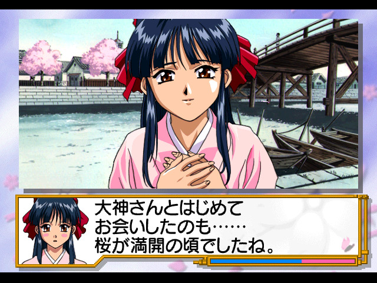
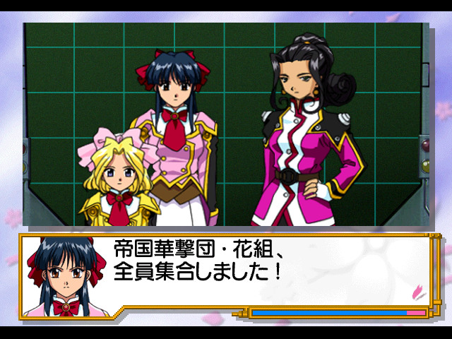

Game Mechanics
Success in 大帝国劇場 conversations directly powers your 光武・改 units on the grid. Understanding the 大神性格ゲージ, キネマトロン fortune colors, captain stances, and Dreamcast ビジュアルメモリ indicators turns difficult stages into fast clears.
LIPS & Personality Gauge
LIPS Variants & Gauge Leanings
Timed LIPS prompts appear across dialogue, cursor inspection scenes, and combat adjacency events. Beyond standard three-option prompts, several events hide a bonus choice until the timer reaches its second half or remove an early option if you hesitate. Letting the clock run out triggers タイムオーバー, which serves as a distinct valid answer.
The 大神性格ゲージ at the bottom right measures blue 硬派 versus pink 軟派 tendencies. Certain LIPS options only appear when the gauge leans toward their side, and trust gains scale faster when matching a heroine's preferred tone.
- 硬派 Affinity Boosts Strongest bonus for マリア・タチバナ and 真宮寺さくら, with smaller bonuses for 桐島カンナ and レニ・ミルヒシュトラーセ.
- 軟派 Affinity Boosts Strongest bonus for 李紅蘭 and ソレッタ・織姫, with smaller bonuses for 神崎すみれ and アイリス.

Trust Stat Scaling & Hidden Chimes
Per-Episode Trust Modifiers
Each episode sums 信頼度 points earned in adventure scenes and battle events, converting them into Attack, Defense, and Move bonuses until the episode clears. Note that ソレッタ・織姫 keeps her trust chimes silent until the Episode 7 boss battle, and レニ・ミルヒシュトラーセ keeps hers silent until her secret is discovered in Episode 3, 4, or 5. Internal points still accumulate normally during those chapters.
| Trust Level | 1 | 2 | 3 | 4 | 5 | 6 | 7 | 8 | 9 | 10 | 11 | 12 | 13 | 14 | 15 | 16 |
|---|---|---|---|---|---|---|---|---|---|---|---|---|---|---|---|---|
| Attack | +1 | +1 | +2 | +3 | +3 | +4 | +5 | +5 | +6 | +6 | +7 | +8 | +8 | +8 | +9 | +10 |
| Defense | +1 | +1 | +1 | +2 | +2 | +2 | +3 | +3 | +4 | +4 | +4 | +5 | +5 | +5 | +6 | +6 |
| Move | 0 | 0 | 0 | 0 | 0 | 0 | 0 | +1 | +1 | +1 | +1 | +1 | +1 | +2 | +2 | +2 |
Kinematron & Lucky Colors
Directory & Fortune Broadcasts
Acquired before Episode 1 Free Event B, the キネマトロン lets you dial members from the Captain's Room. Calling a squadmate advances the theater clock by 5 minutes, whereas dialing 帝都日報 or 運勢指南 advances zero minutes. Matching a battle ally with the current ラッキーカラー increases her 協力攻撃 rate.
| Recipient | Number | Availability |
|---|---|---|
| 神崎すみれ | 13800 | Episodes 1 to 3 (5 min) |
| マリア・タチバナ | 13900 | Episodes 1 to 4 (5 min) |
| 李紅蘭 | 13700 | Episodes 1 to 3 (5 min) |
| 桐島カンナ | 14000 | Episodes 1 to 3 (5 min) |
| 高村椿 | 13600 | Episodes 6 and 7 (5 min) |
| 少年レッド | 13510 | Any Free Event (5 min) |
| 帝都日報 | 13560 | Any Free Event (0 min) |
| 運勢指南 | 14480 | Any Free Event (0 min) |
| Lucky Color | Boosted Pilot |
|---|---|
| White | 大神一郎 |
| Peach | 真宮寺さくら |
| Purple | 神崎すみれ |
| Black | マリア・タチバナ |
| Yellow | アイリス |
| Green | 李紅蘭 |
| Red | 桐島カンナ |
| Pink | ソレッタ・織姫 |
| Blue | レニ・ミルヒシュトラーセ |
Tactics, Protect & Combined Attacks
風林火山 Captain Commands
On Ogami's turn, switching 隊長コマンド applies squad-wide modifiers immediately. Ogami can switch to 風 to cross the map, then change to 火 before attacking on the same turn.
| Stance | Stat Effect | Best Role |
|---|---|---|
| 風 | Move +2, Defense -2 | Closing gaps, defense maps, and reaching switches quickly |
| 林 | Standard stats | Default exploration and balanced turns |
| 火 | Attack +3, Defense -2 | Boss burst turns and Special Attack rushes |
| 山 | Defense +3, Move -1 | Absorbing boss Special Attacks and holding chokepoints |
- かばう Command Shields one chosen heroine from up to three attacks per battle with zero damage to either pilot. When Ogami's HP drops critically low, high-trust episode heroines can also protect Ogami once automatically.
- 合体攻撃 Available when Ogami and a high-trust heroine both reach full 気力 and stand adjacent. Hits every enemy within five tiles while ignoring elevation differences and avoiding counterattacks.
- ため Spirit Recovery High-morale heroines recover 35 Spirit per charge (40 for the episode's lead heroine), filling the bar in three turns versus four turns at 25 Spirit for Ogami or neutral morale.

Koubu Upgrades & War Record
Chassis Progression & Epilogue Score
Across the campaign the squad upgrades from 光武・改 (with アイゼンクライト for the European recruits) to high-armor 天武 and finally the tuned 光武・改2 in Episode 11. Each stage clear grades your total retreats as 優 (0 retreats, 2 points), 良 (1 retreat, 1 point), or 可 (2 or more retreats, 0 points). Reaching 15 or more cumulative points by the end of Episode 12 unlocks 第十三話「君がために汽笛は鳴る」. Clearing the campaign once also unlocks Hard difficulty, which disables trust stat bonuses and Combined Attacks.
Mastery Checklist
- Trigger a second-half LIPS choice and an intentional タイムオーバー reward.
- Align 大神性格ゲージ to unlock a gauge-exclusive prompt.
- Dial 運勢指南 at 14480 before exiting a Free Event for zero time cost.
- Use 風 movement followed by 火 attack on the same Ogami turn.
- Block three enemy hits with かばう and trigger 山 before a boss Special Attack.
- Clear clustered enemies using an elevation-ignoring 合体攻撃.
- Verify 確実 versus 可能 on the Dreamcast ビジュアルメモリ readout.
- Maintain 優 ranks across eight or more chapters to hit 15+ War Record points.